Muninn manual Manual för Muninn
Everything Muninn can do. New here? The quick start is shorter.
Allt Muninn kan. Ny här? Snabbstarten är kortare.
Appen är på engelska. Manualen skriver knappar och menyer som de står i appen, till exempel New note.
1. Your account1. Ditt konto
Joining Muninn
There is no open sign-up. You join through an invitation link from the administrator, or from another user whose request the administrator approved. The link lets you choose a username, a display name and a password of at least 12 characters. It works once and expires after a few days.
Signing in and out
Sign in with your username and password. Muninn keeps you signed in on that device until you tap Sign out (top right) or have not used it for a long time. After several wrong passwords in a row, sign-in is paused for a while; wait and try again.
Changing your password
Open Account (your name in the top bar) and use Change password. Every other device you were signed in on is signed out, which is also the way to sign out a phone you lost.
Forgot your password?
Muninn sends no e-mail, so there is no "forgot password" button. Ask your administrator for a reset link. It works once, for a limited time, and signs you out everywhere when used.
Gå med i Muninn
Det finns ingen öppen registrering. Du går med genom en inbjudningslänk från administratören, eller från en annan användare vars förfrågan administratören har godkänt. Med länken väljer du användarnamn, visningsnamn och ett lösenord på minst 12 tecken. Den fungerar en gång och går ut efter några dagar.
Logga in och ut
Logga in med ditt användarnamn och lösenord. Muninn håller dig inloggad på enheten tills du trycker på Sign out (uppe till höger) eller inte har använt den på länge. Efter flera felaktiga lösenord i rad pausas inloggningen en stund; vänta och försök igen.
Byta lösenord
Öppna Account (ditt namn i översta raden) och använd Change password. Alla andra enheter du var inloggad på loggas ut, vilket också är sättet att logga ut en mobil du har tappat bort.
Glömt lösenordet?
Muninn skickar ingen e-post, så det finns ingen knapp för glömt lösenord. Be administratören om en återställningslänk. Den fungerar en gång under en begränsad tid och loggar ut dig överallt när du använt den.
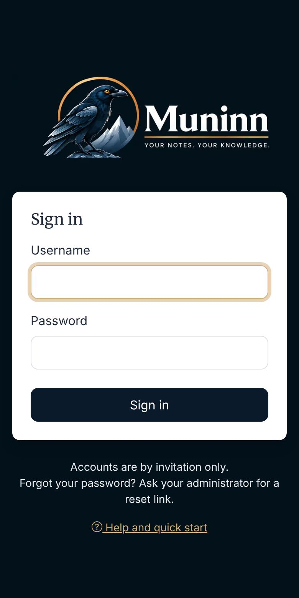
2. Muninn on your phone2. Muninn i mobilen
Muninn is a web app: nothing to download from an app store. Add it to your home screen and it opens full screen with the raven icon, like any other app.
- iPhone and iPad: open Muninn in Safari, tap Share, then Add to Home Screen.
- Android: open Muninn in Chrome, open the ⋮ menu, then Install app or Add to Home screen.
- Computer: in Chrome or Edge, click the install icon in the address bar.
Muninn needs an internet connection. It does not keep copies of your notes for offline use.
Muninn är en webbapp: inget att hämta från en appbutik. Lägg den på hemskärmen så öppnas den i helskärm med korpikonen, som vilken app som helst.
- iPhone och iPad: öppna Muninn i Safari, tryck på Dela och sedan Lägg till på hemskärmen.
- Android: öppna Muninn i Chrome, öppna menyn ⋮ och välj Installera app eller Lägg till på startskärmen.
- Dator: i Chrome eller Edge klickar du på installationsikonen i adressfältet.
Muninn behöver internetanslutning. Den sparar inga kopior av dina anteckningar för användning utan nät.
3. Workspaces and roles3. Arbetsytor och roller
Every note lives in a workspace.
- Your personal workspace is created with your account. Only you can see it.
- Shared workspaces are for working with others. Anyone can create one under Workspaces → New shared workspace, and becomes its Owner.
Switch workspace with the Workspace picker on the notes page. New notes go into the workspace you are in.
Roles in a shared workspace
Varje anteckning ligger i en arbetsyta (workspace).
- Din personliga arbetsyta skapas tillsammans med ditt konto. Bara du kan se den.
- Delade arbetsytor är till för att arbeta med andra. Vem som helst kan skapa en under Workspaces → New shared workspace, och blir då dess ägare (Owner).
Byt arbetsyta med väljaren Workspace på anteckningssidan. Nya anteckningar hamnar i den arbetsyta du står i.
Roller i en delad arbetsyta
| Role | May |
|---|---|
| Reader | Read notes, their history and the workspace chat. |
| Editor | Also write, edit, archive and delete notes, and write in the chat. |
| Admin | Also add and remove Editors and Readers, empty the Trash and manage Magic Links. |
| Owner | Everything, including other Admins and Owners, renaming and deleting the workspace. |
| Roll | Får |
|---|---|
| Reader | Läsa anteckningar, deras historik och arbetsytans chatt. |
| Editor | Dessutom skriva, ändra, arkivera och radera anteckningar, och skriva i chatten. |
| Admin | Dessutom lägga till och ta bort Editors och Readers, tömma papperskorgen och hantera Magic Links. |
| Owner | Allt, även andra Admins och Owners, byta namn på och radera arbetsytan. |
Members
Open a workspace under Workspaces to see its members. Admins and Owners add people by their exact username (there is no user directory) and change or remove roles there. A workspace can only be deleted when it is empty, so delete its notes first.
Medlemmar
Öppna en arbetsyta under Workspaces för att se dess medlemmar. Admins och Owners lägger till personer med deras exakta användarnamn (det finns ingen användarkatalog) och ändrar eller tar bort roller där. En arbetsyta kan bara raderas när den är tom, så radera anteckningarna först.
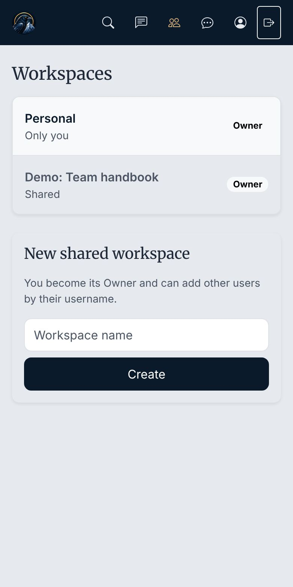
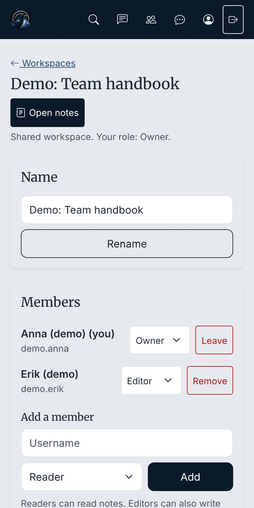
4. Writing notes4. Skriva anteckningar
Tap New note, or open a note and tap Edit. Notes are written in Markdown: plain text with a few marks for formatting. You do not need to learn it, since the toolbar adds the marks for you, and Preview shows the result. Markdown help in the editor lists every mark.
# Shopping
- [ ] milk
- [x] bread
**Bold**, _italic_ and a [link](https://example.com).- Checklists: tick the boxes while reading the note, without opening the editor.
- Code: put three backticks (
```) on the lines before and after the code. Write a language after the first backticks, such as```sql, to get colours. - Links open in a new tab.
When two people edit at once
Muninn never silently overwrites someone else's work. If another person saved the note after you opened it, your save is stopped with a message. Copy your text, reload the page, and add your change to the new version.
Tryck på New note, eller öppna en anteckning och tryck på Edit. Anteckningar skrivs i Markdown: vanlig text med några tecken för formatering. Du behöver inte lära dig det, eftersom verktygsraden lägger in tecknen åt dig, och Preview visar resultatet. Markdown help i redigeraren visar alla tecken.
# Handla
- [ ] mjölk
- [x] bröd
**Fetstil**, _kursiv_ och en [länk](https://example.com).- Checklistor: bocka av rutorna när du läser anteckningen, utan att öppna redigeraren.
- Kod: skriv tre bakåtfnuttar (
```) på raden före och raden efter koden. Skriv ett språk efter de första, till exempel```sql, så får koden färger. - Länkar öppnas i en ny flik.
När två personer redigerar samtidigt
Muninn skriver aldrig tyst över någon annans arbete. Om någon annan sparade anteckningen efter att du öppnade den stoppas din sparning med ett meddelande. Kopiera din text, ladda om sidan och för in din ändring i den nya versionen.
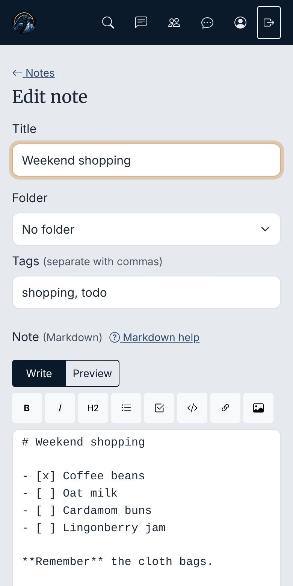
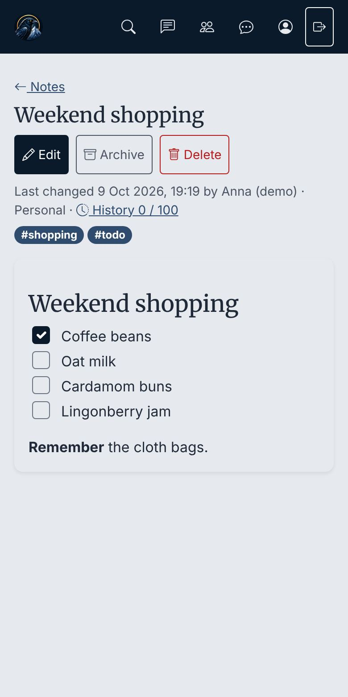
5. Images5. Bilder
While editing a note you can add a picture in three ways:
- the image button in the toolbar (on a phone this also offers the camera),
- pasting a screenshot or copied image into the text,
- dragging a picture file into the text on a computer.
PNG, JPEG, GIF and WebP images up to 10 MB are accepted. Images are private: only people who can read the note can see them. Pictures from other websites are shown as links, not loaded.
To remove an image for good, use Images on this note in the editor. This deletes the file at once, so older versions in the history show "(image removed)" instead.
När du redigerar en anteckning kan du lägga till en bild på tre sätt:
- bildknappen i verktygsraden (i mobilen kan du även välja kameran),
- klistra in en skärmbild eller kopierad bild i texten,
- dra en bildfil till texten på en dator.
Bilder i PNG, JPEG, GIF och WebP på upp till 10 MB tas emot. Bilderna är privata: bara de som kan läsa anteckningen kan se dem. Bilder från andra webbplatser visas som länkar och laddas inte.
För att ta bort en bild för gott använder du Images on this note i redigeraren. Filen raderas direkt, så äldre versioner i historiken visar ”(image removed)” i stället.
6. Folders and tags6. Mappar och taggar
Folders
Each workspace has its own folders. Create, rename and move them with Folders on the notes page. Folders can be up to three levels deep. Choose a note's folder while editing it. Deleting a folder never deletes notes: its notes and sub-folders move up one level.
Tags
Type tags while editing, separated by commas; Muninn suggests tags already in use. A note can have both a folder and several tags.
Filtering
Above the note list, pick a folder and tap a tag to show only matching notes. Tap the tag again to clear it.
Mappar
Varje arbetsyta har egna mappar. Skapa, byt namn på och flytta dem med Folders på anteckningssidan. Mappar kan ligga i upp till tre nivåer. Välj anteckningens mapp när du redigerar den. Att radera en mapp raderar aldrig anteckningar: dess anteckningar och undermappar flyttas upp en nivå.
Taggar
Skriv taggar när du redigerar, åtskilda med kommatecken; Muninn föreslår taggar som redan används. En anteckning kan ha både en mapp och flera taggar.
Filtrera
Ovanför anteckningslistan väljer du en mapp och trycker på en tagg för att bara visa det som matchar. Tryck på taggen igen för att ta bort filtret.
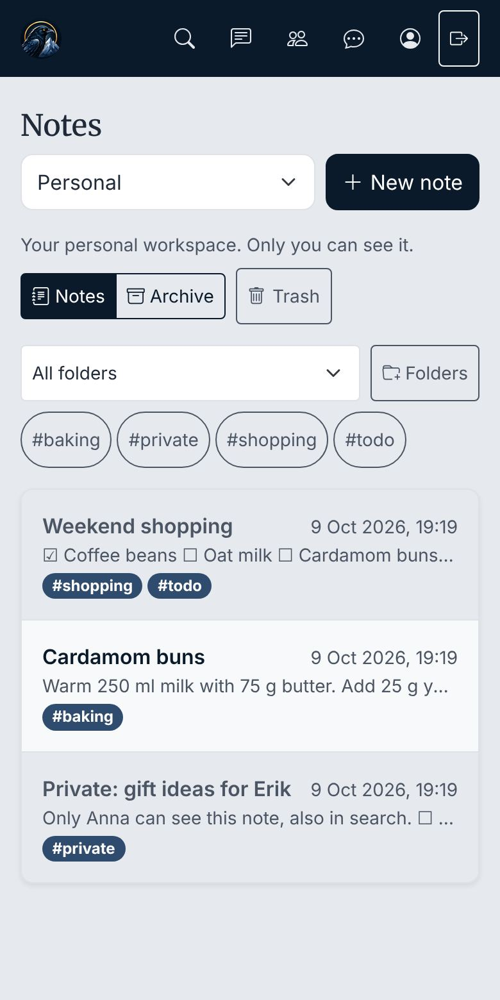
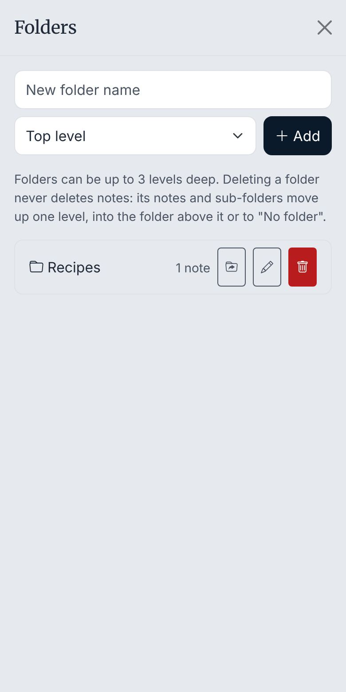
7. Search7. Sökning
Search in the top bar looks for words in the titles, text and tags of every note in all your workspaces. It ignores upper and lower case and accents, so "o" also finds "ö". Archived notes are left out unless you tick Include archived notes. Notes in the Trash are never found.
Search matches the words you type literally, without spelling tolerance, and shows at most 50 results.
Search i översta raden letar efter ord i rubriker, text och taggar i alla anteckningar i alla dina arbetsytor. Den bryr sig inte om stora och små bokstäver eller accenter, så ”o” hittar även ”ö”. Arkiverade anteckningar tas bara med om du kryssar i Include archived notes. Anteckningar i papperskorgen hittas aldrig.
Sökningen matchar orden exakt som du skriver dem, utan stavningstolerans, och visar högst 50 träffar.
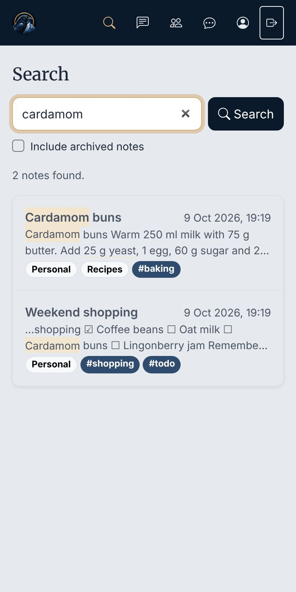
8. History8. Historik
Every time a note is saved, the version it replaces is kept. Open the note and tap History to see who changed what and when, and to read old versions. Restore this version brings an old text back as a new version, so a restore can also be undone.
Muninn keeps the latest 100 versions of each note. Several quick saves by the same person count as one version.
Varje gång en anteckning sparas behålls versionen den ersätter. Öppna anteckningen och tryck på History för att se vem som ändrade vad och när, och för att läsa gamla versioner. Restore this version tar tillbaka en gammal text som en ny version, så även en återställning kan ångras.
Muninn sparar de senaste 100 versionerna av varje anteckning. Flera snabba sparningar av samma person räknas som en version.
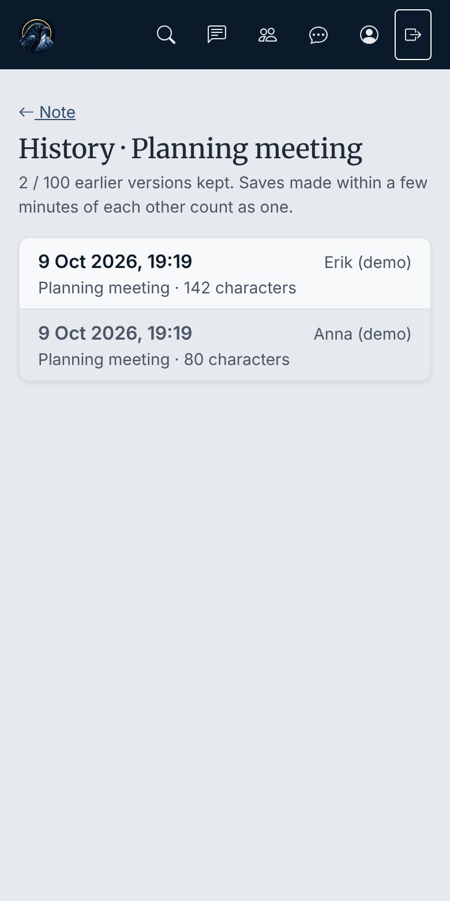
9. Archive and Trash9. Arkiv och papperskorg
Archive notes you are done with but want to keep. They leave the normal list, stay readable under Archive on the notes page, and can be found with search. Use Unarchive to bring one back.
Delete moves a note to the Trash of its workspace. Editors can restore it from there for 30 days; after that it is deleted for good, with its history and images. Workspace Admins and Owners can also delete single notes forever or empty the whole Trash at once.
Arkivera anteckningar som du är klar med men vill behålla. De försvinner ur den vanliga listan, går att läsa under Archive på anteckningssidan och kan hittas med sökningen. Använd Unarchive för att ta tillbaka en.
Radera (Delete) flyttar en anteckning till arbetsytans papperskorg, Trash. Editors kan återställa den därifrån i 30 dagar; sedan raderas den för gott, med historik och bilder. Arbetsytans Admins och Owners kan även radera enstaka anteckningar för gott eller tömma hela papperskorgen på en gång.
10. Magic Links10. Magic Links
A Magic Link opens a whole workspace, one folder (with its sub-folders) or one note without signing in, for example on a shared kitchen tablet. Workspace Admins and Owners create them from the workspace's page under Workspaces → Manage Magic Links.
- Access: read only, or read and write. Write links can edit notes and add new ones, but never delete.
- Validity: every link has an end date, at most a year ahead, and can start later.
- Daily hours: optionally only between certain times each day, in Swedish time (for example 07:00–18:00).
- Revoke a link at any time; it stops working at once.
En Magic Link öppnar en hel arbetsyta, en mapp (med undermappar) eller en anteckning utan inloggning, till exempel på en delad surfplatta i köket. Arbetsytans Admins och Owners skapar dem från arbetsytans sida under Workspaces → Manage Magic Links.
- Behörighet: bara läsa, eller läsa och skriva. Skrivlänkar kan ändra anteckningar och lägga till nya, men aldrig radera.
- Giltighet: varje länk har ett slutdatum, högst ett år fram, och kan börja gälla senare.
- Tider: valfritt bara mellan vissa klockslag varje dag, i svensk tid (till exempel 07:00–18:00).
- Återkalla (Revoke) en länk när som helst; den slutar fungera direkt.
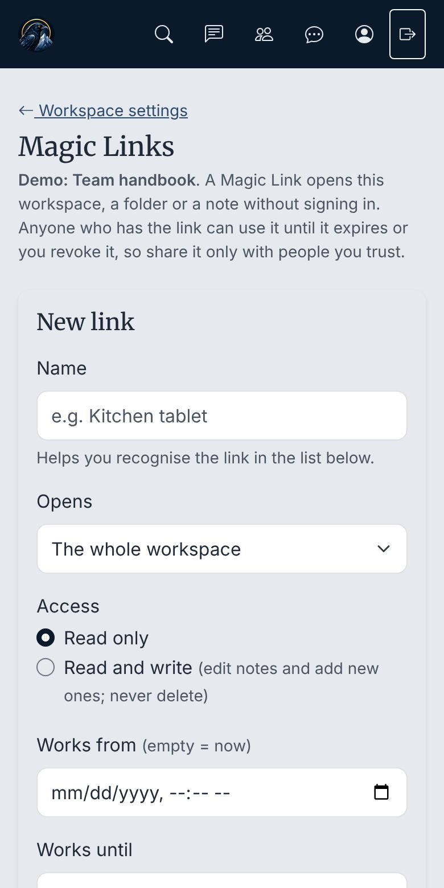
11. Chat11. Chatt
Chat in the top bar has one chat per shared workspace and a common chat called Everyone. Messages are plain text and are deleted after 90 days. You can delete your own messages; workspace Admins and Owners can delete any message in their workspace's chat.
- In a workspace chat, every member reads and Editors and up write.
- Everyone can read the Everyone chat; only users the administrator allows can write there.
- The administrator decides per user how much chat they get, and can turn it off. Administrators cannot read chats.
Chat i översta raden har en chatt per delad arbetsyta och en gemensam chatt som heter Everyone. Meddelanden är vanlig text och raderas efter 90 dagar. Du kan radera dina egna meddelanden; arbetsytans Admins och Owners kan radera alla meddelanden i arbetsytans chatt.
- I en arbetsytas chatt läser alla medlemmar, och Editors och uppåt skriver.
- Alla kan läsa chatten Everyone; bara användare som administratören tillåter kan skriva där.
- Administratören bestämmer för varje användare hur mycket chatt den får, och kan stänga av den. Administratörer kan inte läsa chattar.
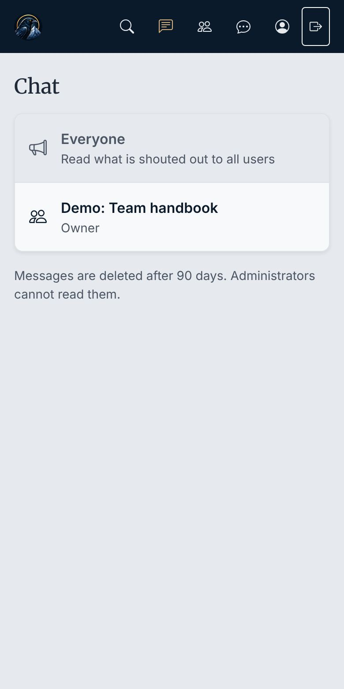
12. Messages, invitations and help12. Meddelanden, inbjudningar och hjälp
Messages from the administrator
The administrator can show a banner under the top bar. Some are shown once, some stay until you close them with their ✕, and some are short votes that stay until you have answered.
Contact admin
Contact admin in the top bar sends a short message to the administrator. The answer comes back inside Muninn: a number on the Contact admin button shows new answers, and My messages (in the same dialog) lists your conversations, where you can also reply. Only you and the administrator see them. When the administrator closes a conversation you can still read it; write a new message to ask something else. You may also add an e-mail address or phone number. Conversations are deleted a year after the newest message.
The gold shield
If you also have an administrator account, the administrator can pick your everyday account to be told when something waits on the admin side, such as an invitation request or a new message. A gold shield then shows first in the top bar. It never says what is waiting: tap it and choose Sign out to switch, then sign in with your administrator account.
Inviting someone
Under Account → Invite someone, write who should be invited and why. Once the administrator approves, create the invitation link on the same page and send it yourself. Each link works once and is shown only once.
Meddelanden från administratören
Administratören kan visa en banderoll under översta raden. Vissa visas en gång, vissa ligger kvar tills du stänger dem med deras ✕, och vissa är korta omröstningar som ligger kvar tills du har svarat.
Kontakta administratören
Contact admin i översta raden skickar ett kort meddelande till administratören. Svaret kommer inne i Muninn: en siffra på Contact admin-knappen visar nya svar, och My messages (i samma dialog) listar dina konversationer, där du också kan svara. Bara du och administratören ser dem. När administratören har stängt en konversation kan du fortfarande läsa den; skriv ett nytt meddelande om du vill fråga något annat. Du kan också ange en e-postadress eller ett telefonnummer. Konversationer raderas ett år efter det senaste meddelandet.
Den gula skölden
Om du också har ett administratörskonto kan administratören välja att ditt vanliga konto ska få veta när något väntar på administratörssidan, till exempel en inbjudningsförfrågan eller ett nytt meddelande. Då syns en gul sköld först i översta raden. Den säger aldrig vad som väntar: tryck på den och välj Sign out to switch, och logga sedan in med ditt administratörskonto.
Bjuda in någon
Under Account → Invite someone skriver du vem som ska bjudas in och varför. När administratören har godkänt skapar du inbjudningslänken på samma sida och skickar den själv. Varje länk fungerar en gång och visas bara en gång.
13. Good to know13. Bra att veta
- Muninn needs a connection; there is no offline editing.
- The note list shows the 500 most recently changed notes of a workspace; use folders, tags and search to narrow it.
- Folder names must be unique within a workspace.
- Only images can be attached, not other files.
- Ticking a checklist box saves the note. If someone else saved it just before, reload and tick again.
- The app's buttons and messages are in English.
- Muninn behöver uppkoppling; det går inte att redigera utan nät.
- Anteckningslistan visar de 500 senast ändrade anteckningarna i en arbetsyta; använd mappar, taggar och sökning för att begränsa den.
- Mappnamn måste vara unika inom en arbetsyta.
- Bara bilder kan bifogas, inte andra filer.
- Att bocka i en ruta i en checklista sparar anteckningen. Om någon annan sparade precis innan, ladda om och bocka igen.
- Appens knappar och meddelanden är på engelska.